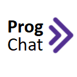

ProgChat
Description:
This plugin aims to support the teaching of programming on Blackboard. This plugin adds highlight and formatted code to the Blackboard Collaborate chat. With this plugin it is possible to download the code in the chat. The code is recognized after the "//code" string.
Private Policy:
This plugin don't handling user or sensitive data. We don't get or store any data. Look more
Example:
How to Use:
- Start Extension in Chrome.
- Enter a Blackboard Collaborate.
- Type this string: //code (Don't press Enter or Send).
- Enter your code then.
- Press Enter or Send.
- If other user send code, you can download it.
- Click in Download.